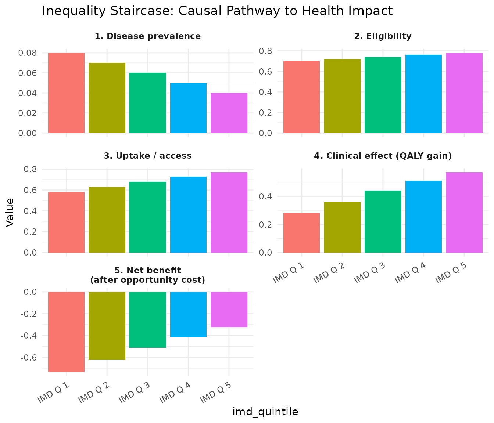

When to use full-form DCEA
Full-form DCEA is appropriate when subgroup-specific clinical evidence is available — for example, differential uptake by deprivation, differential survival benefit by SES, or trial subgroup data stratified by socioeconomic characteristics.
The inequality staircase
The five steps of the staircase define how patient-level benefit distributes across IMD groups:
- Disease prevalence — who gets the disease?
- Eligibility — who meets criteria for the treatment?
- Uptake / access — who actually receives it?
- Clinical effect — what QALY gain does each group achieve?
- Opportunity cost — what health is displaced in each group?
Worked example: NSCLC with subgroup evidence
baseline <- get_baseline_health("england", "imd_quintile")Subgroup-specific CEA inputs
subgroup_data <- tibble::tibble(
group = 1:5,
group_label = paste("IMD Q", 1:5),
inc_qaly = c(0.28, 0.36, 0.44, 0.51, 0.57),
inc_cost = c(13200, 12800, 12400, 12000, 11600),
pop_share = c(0.28, 0.24, 0.20, 0.16, 0.12)
)
subgroup_data
#> # A tibble: 5 × 5
#> group group_label inc_qaly inc_cost pop_share
#> <int> <chr> <dbl> <dbl> <dbl>
#> 1 1 IMD Q 1 0.28 13200 0.28
#> 2 2 IMD Q 2 0.36 12800 0.24
#> 3 3 IMD Q 3 0.44 12400 0.2
#> 4 4 IMD Q 4 0.51 12000 0.16
#> 5 5 IMD Q 5 0.57 11600 0.12Differential uptake
uptake <- c(0.58, 0.63, 0.68, 0.73, 0.77)Run full-form DCEA
result_full <- run_full_dcea(
subgroup_cea_results = subgroup_data,
baseline_health = baseline,
wtp = 20000,
opportunity_cost_threshold = 13000,
uptake_by_group = uptake
)
summary(result_full)
#> == Full-Form DCEA Result ==
#> Net Health Benefit (equity-weighted): -0.1400 QALYs
#> SII change: 0.2080
#> Decision: Lose-Lose (efficiency loss + equity loss)
#>
#> -- Per-group results --
#> # A tibble: 5 × 5
#> group_label inc_qaly_adj nhb baseline_hale post_hale
#> <chr> <dbl> <dbl> <dbl> <dbl>
#> 1 IMD Q 1 0.162 -0.220 52.1 51.7
#> 2 IMD Q 2 0.227 -0.176 56.3 55.9
#> 3 IMD Q 3 0.299 -0.122 59.8 59.5
#> 4 IMD Q 4 0.372 -0.0657 63.2 62.9
#> 5 IMD Q 5 0.439 -0.00770 66.8 66.6Inequality staircase
sc_data <- build_staircase_data(
group = 1:5,
group_labels = paste("IMD Q", 1:5),
prevalence = c(0.08, 0.07, 0.06, 0.05, 0.04),
eligibility = c(0.70, 0.72, 0.74, 0.76, 0.78),
uptake = uptake,
clinical_effect = subgroup_data$inc_qaly,
opportunity_cost = subgroup_data$inc_cost / 13000
)
plot_inequality_staircase(sc_data)